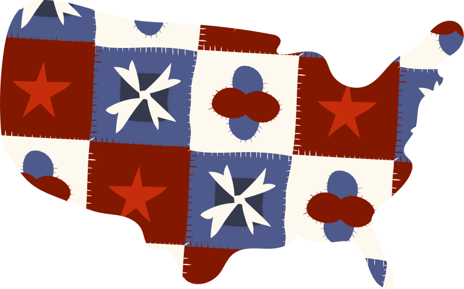
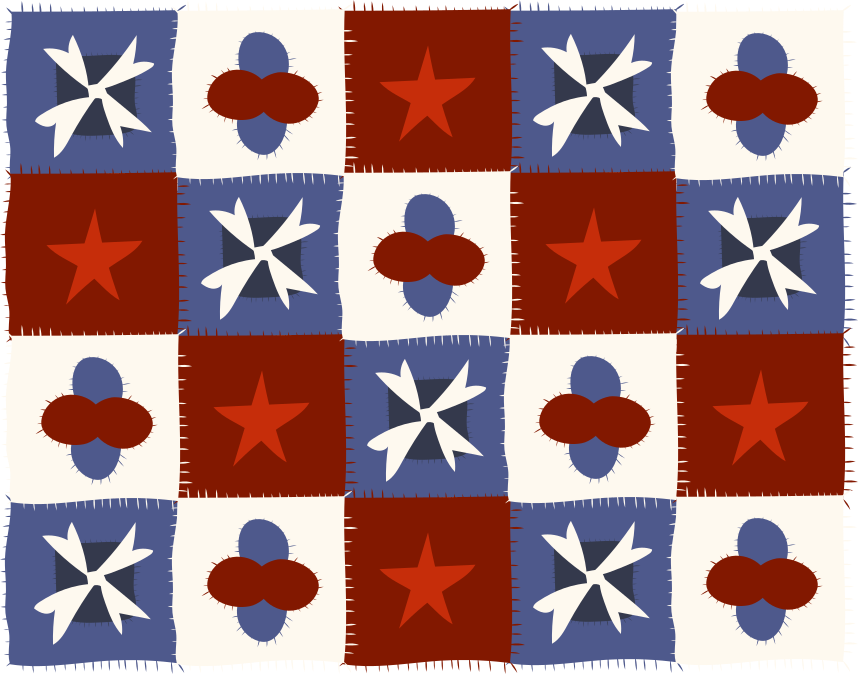

American User Stories
The United States is a diverse country, with a plethora of different types of communities.

This diversity is great, but it also makes it hard for people from different types of communities to relate to each other.
Think about it---what would you imagine a community different from your own to look like? If you live in a city, what would a rural area look like? What about if you live in the suburbs, what could life in the city look like? Do you have any values in common?
Meet Lisa, Rob, and John.
They are from 3 different types of communities: urban, suburban, and rural.
Most Americans say that people living in other types of communities don’t understand the types of problems they face. But do we have similar values? Let's see.
*According to a 2018 Pew Research Center Study.
